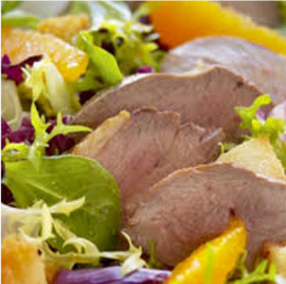

Pato com Laranja (Foto: Victor José Costa Farias)
Tempere o pato com o alho, sal pimenta, suco de limão, o vinho
e deixe descansar 6 horas Retire o pato do tempero e escorra bem.
Unte com a manteiga, Coloque o pato numa assadeira com o tempero.
Leve ao forno. Depois de 20 minutos comece a regar com o suco de
laranja. Deixe mais 30 minutos. Quando o pato estiver assado,
retire do forno, coloque numa travessa regue com o molho que
ficou na assadeira. Decore com gomos de laranja e sirva.